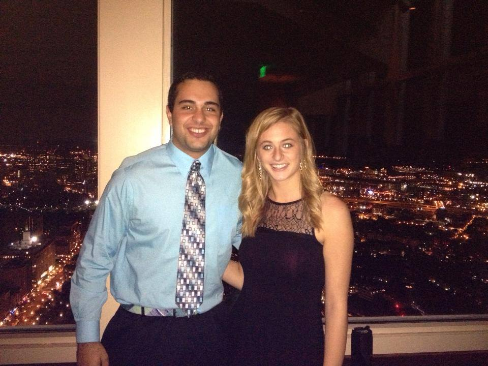
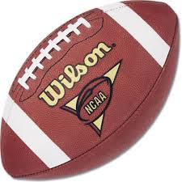

Better Betters Inc.
Better Betters Inc. is currently located in Crofton, MD. Our corporate offices will be in Las Vegas, Nevada in the Summer of 2015
Better Betters Inc. is currently located in Crofton, MD. Our corporate offices will be in Las Vegas, Nevada in the Summer of 2015
As an avid sports fan, Jay Nicholls had an idea that there must be some way to predict NFL games using math and statistics. Using analysis of many years of NFL data, Better Betters was born. Prior to starting Better Betters, Jay Nicholls was a Finance major with a minor in Economics at Framingham State University. While playing hockey for FSU as an assistant captain, Mr. Nicholls was also involved in the community. He was the President of the Business Leadership Club and also an intern at the MetroWest Economic Research Center (MERC) studying and reporting on the Cost of Living.

As a close friend to Jay Nicholls at Framingham State University, a small idea of a Better Betters company began in a dorm room. Prior to helping start Better Betters, Melvin Rose was a Computer Science major at Framingham State University with a concentration in Computer programming. Their friendship was forged as Melvin and Jay met as teammates on Framingham State's ice hockey team. Rose was also a certified Apple technician and successful Software Engineering Intern at ElanTech Inc. in Greenbelt, MD. Rose is well versed in many different computer languages including Java, JavaScript, C# and many more.
At Better Betters we strive to provide winning picks primarily for NFL games and also NCAA Football using data analytics and in-depth research. Using historical data combined with intangible current knowledge of players, coaches, and long term trends among teams, we strive to analyze every game to provide our customers with the most potentially profitable picks of the week. A sophisticated algorithm is tested every Saturday for College Football and Sunday for the NFL using vast amounts of data such as; points for/against, passing and rushing yards for/against and much more. Using this algorithm to predict College Football and the National football league, Better Betters Inc. has established a high percentage of wins that would help our customers not only invest smart, but continue to win smart.

Our main purpose here at Better Betters is to provide the best possible professional service, with the utmost dedication at all times. Our employees use our custom ground breaking algorithm to predict the games. This is the reason why Better Betters is a company for Success. We provide our customers with the most highly studied and calculated games to not just bet on, but to invest on to reap continual profit for all of our customers. This invaluable service we provide is not only being perfected for NFL and College Football, but is also starting to be tweaked mathematically for all of the world’s top sports. By 2016 Better Betters will be providing predictions for the NHL, NBA, EPL, La Liga, Bundesliga, and many more leagues across the world.

Better Betters Inc is currently looking for driven individuals with a passion for sports and research. This job requires a strong background in mathematical analysis and statistics. A confidentiality agreement would be required to be signed upon hiring

Better Betters Inc is currently looking for individuals with expertise in JavaScript, C#, and web development to help us build our up in coming website. A strong knowledge of web development and design are needed for this position including a strong background in sports.